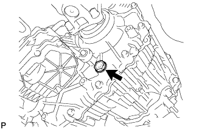
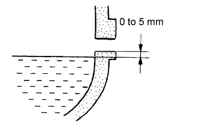

TRANSFER OIL > ON-VEHICLE INSPECTION |
| 1. CHECK TRANSFER OIL |
 |
Remove the filler plug and gasket.
 |
Check that the oil level is between 0 to 5.0 mm (0 to 0.197 in.) from the bottom lip of the filler plug hole.
If the result is not as specified, add transfer oil.
When the oil level is too low, check for oil leaks.
Install a new gasket onto the filler plug and then tighten the plug.
| 2. ADD TRANSFER OIL |
Remove the filler plug and gasket.
Add oil so that the oil level is between 0 to 5.0 mm (0 to 0.197 in.) from the bottom lip of the filler plug hole.
Wait approximately 5 minutes and check that the oil level has not changed.
Install a new gasket onto the filler plug and then tighten the plug.